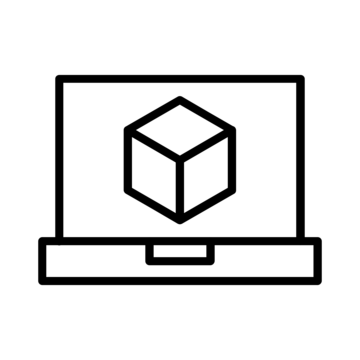

I love creating beautiful and intuitive user interfaces using JavaFX and modern frameworks.
Working with both software and hardware to create integrated solutions...
Designing and implementing simulations to model real-world systems and processes.
I enjoy solving complex problems and developing logical solutions.


